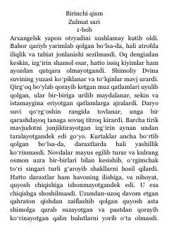

YZArxangelskda joylashgan yapon otryadining og'ir va ziddiyatli hayoti haqida tarixiy roman.
Roman Arxangelsk shahriga joylashtirilgan yapon harbiy otryadining og'ir sharoitlari va mahalliy aholi bilan bo'lgan murakkab munosabatlari haqida hikoya qiladi. Asar poruchik Yutaro Toda nigohi orqali urush davridagi sovuq, ochlik va doimiy xavotir muhitini tasvirlaydi.